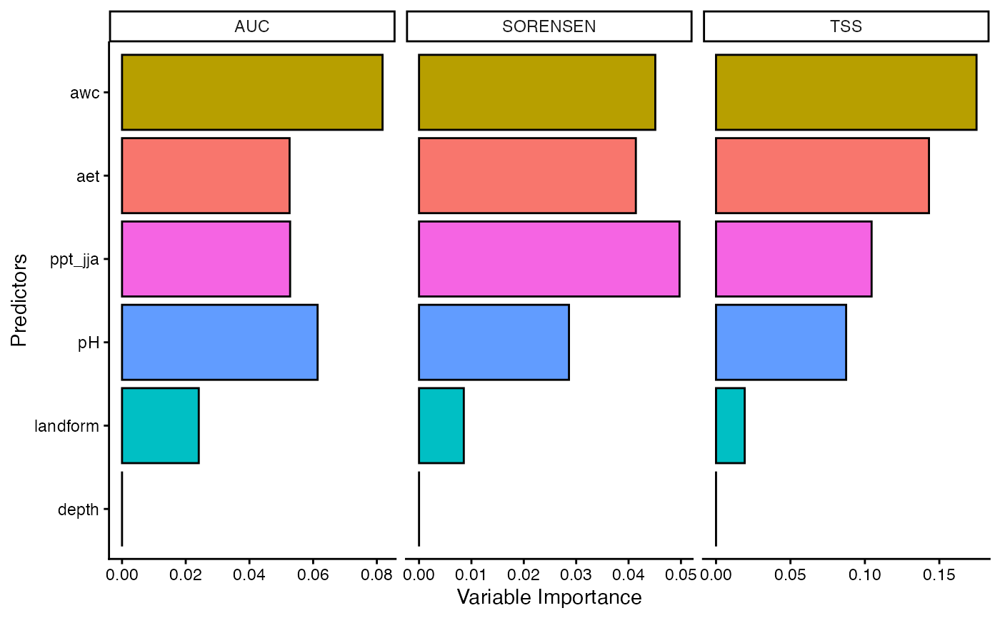

Calculate permutation-based variable importance scores for SDMs
Source:R/sdm_varimp.R
sdm_varimp.RdThis function calculates variable importance scores for species distribution models (SDMs) based on permutation-based approach.
Usage
sdm_varimp(
models,
data,
response,
predictors,
n_sim = 50,
n_cores = 1,
thr = NULL,
clamp = TRUE,
pred_type = "cloglog"
)Arguments
- models
list of one or more models fitted with fit_ or tune_ functions. In case use models fitted with fit_ensemble or esm_ family function only one model could be used. Usage models = mglm or models = list(mglm, mraf, mgbm)
- data
data.frame. Database with response (0,1) and predictors values.
- response
character. Column name with species absence-presence data (0,1).
- predictors
character. Vector with the column names of predictor variables. Usage predictors = c("aet", "cwd", "tmin")
- n_sim
integer. The number of Monte Carlo replications to perform. Default is 50. The results from each replication are averaged together (the standard deviation will also be returned).
- n_cores
numeric. Number of cores use for parallelization. Default 1
- thr
character. Threshold criterion used to get binary suitability values (i.e. 0,1). Used for threshold-dependent performance metrics. It is possible to use more than one threshold type. A vector must be provided for this argument. The following threshold criteria are available:
lpt: The highest threshold at which there is no omission.
equal_sens_spec: Threshold at which the Sensitivity and Specificity are equal.
max_sens_spec: Threshold at which the sum of the Sensitivity and Specificity is the highest (aka threshold that maximizes the TSS).
max_jaccard: The threshold at which the Jaccard index is the highest.
max_sorensen: The threshold at which the Sorensen index is the highest.
max_fpb: The threshold at which FPB (F-measure on presence-background data) is the highest.
sensitivity: Threshold based on a specified Sensitivity value. Usage thr = c('sensitivity', sens='0.6') or thr = c('sensitivity'). 'sens' refers to Sensitivity value. If a sensitivity value is not specified, the default value is 0.9
#' If more than one threshold type is used, concatenate threshold types, e.g., thr=c('lpt', 'max_sens_spec', 'max_jaccard'), or thr=c('lpt', 'max_sens_spec', 'sensitivity', sens='0.8'), or thr=c('lpt', 'max_sens_spec', 'sensitivity'). Function will use all thresholds if no threshold type is specified
- clamp
logical. If TRUE, predictors and features are restricted to the range seen during model training.
- pred_type
character. Type of response required available "link", "exponential", "cloglog" and "logistic". Default "cloglog"
Value
a tibble with the columns:
model: model name
threshold: threshold names
predictors: predictor names
from TPR to IMAE: performance metrics
Details
This function calculates variable importance scores for species distribution models (SDMs) based on permutation-based approach. Thus, the function calculates the model performance using the original data and the permuted data. The difference between the two performances is the variable importance score.
Examples
# \donttest{
require(tidyr)
#> Loading required package: tidyr
#>
#> Attaching package: ‘tidyr’
#> The following object is masked from ‘package:terra’:
#>
#> extract
require(dplyr)
require(ggplot2)
data(abies)
abies
#> # A tibble: 1,400 × 13
#> id pr_ab x y aet cwd tmin ppt_djf ppt_jja pH awc
#> <int> <dbl> <dbl> <dbl> <dbl> <dbl> <dbl> <dbl> <dbl> <dbl> <dbl>
#> 1 715 0 -95417. 314240. 323. 546. 1.24 62.7 17.8 5.77 0.108
#> 2 5680 0 98987. -159415. 448. 815. 9.43 130. 6.43 5.60 0.160
#> 3 7907 0 121474. -99463. 182. 271. -4.95 151. 11.2 0 0
#> 4 1850 0 -39976. -17456. 372. 946. 8.78 116. 2.70 6.41 0.0972
#> 5 1702 0 111372. -91404. 209. 399. -4.03 165. 9.27 0 0
#> 6 10036 0 -255715. 392229. 308. 535. 4.66 166. 16.5 5.70 0.0777
#> 7 12384 0 -311765. 380213. 568. 352. 4.38 480. 41.2 5.80 0.110
#> 8 6513 0 111360. -120229. 327. 633. 4.93 163. 8.91 1.18 0.0116
#> 9 9884 0 -284326. 442136. 377. 446. 3.99 296. 16.8 5.96 0.0900
#> 10 8651 0 137640. -110538. 215. 265. -4.62 180. 9.57 0 0
#> # ℹ 1,390 more rows
#> # ℹ 2 more variables: depth <dbl>, landform <fct>
data(backg)
backg
#> # A tibble: 5,000 × 13
#> pr_ab x y aet cwd tmin ppt_djf ppt_jja pH awc depth
#> <dbl> <dbl> <dbl> <dbl> <dbl> <dbl> <dbl> <dbl> <dbl> <dbl> <dbl>
#> 1 0 160779. -449968. 280. 1137. 13.5 71.3 1.19 0 0 0
#> 2 0 36849. 24152. 260. 382. -3.17 171. 17.5 0.212 0.00347 201
#> 3 0 -240171. 90032. 400. 700. 8.68 285. 5.02 5.72 0.0804 50.1
#> 4 0 -152421. -143518. 367. 843. 9.01 72.0 1.20 7.54 0.170 154.
#> 5 0 -193191. 24152. 397. 842. 8.97 125. 1.98 6.20 0.131 122.
#> 6 0 -277971. 223682. 385. 637. 4.93 226. 8.16 5.81 0.0512 56.2
#> 7 0 -313341. 270122. 582. 406. 6.29 334. 18.4 5.80 0.168 201
#> 8 0 54399. -15538. 346. 195. -5.22 142. 13.0 5.60 0.120 201
#> 9 0 282549. -582268. 285. 1097. 11.4 56.3 1.39 6.57 0.135 68.4
#> 10 0 104079. -178618. 385. 871. 6.76 147. 7.80 6.10 0.0300 41
#> # ℹ 4,990 more rows
#> # ℹ 2 more variables: percent_clay <dbl>, landform <fct>
# In this example we will partition the data using the k-fold method
abies2 <- part_random(
data = abies,
pr_ab = "pr_ab",
method = c(method = "kfold", folds = 5)
)
backg2 <- part_random(
data = backg,
pr_ab = "pr_ab",
method = c(method = "kfold", folds = 5)
)
max_t1 <- fit_max(
data = abies2,
response = "pr_ab",
predictors = c("aet", "ppt_jja", "pH", "awc", "depth"),
predictors_f = c("landform"),
partition = ".part",
background = backg2,
thr = c("max_sens_spec", "equal_sens_spec", "max_sorensen"),
clamp = TRUE,
classes = "default",
pred_type = "cloglog",
regmult = 1
)
#> Formula used for model fitting:
#> ~aet + ppt_jja + pH + awc + depth + I(aet^2) + I(ppt_jja^2) + I(pH^2) + I(awc^2) + I(depth^2) + hinge(aet) + hinge(ppt_jja) + hinge(pH) + hinge(awc) + hinge(depth) + ppt_jja:aet + pH:aet + awc:aet + depth:aet + pH:ppt_jja + awc:ppt_jja + depth:ppt_jja + awc:pH + depth:pH + depth:awc + categorical(landform) - 1
#> Replica number: 1/1
#> Partition number: 1/5
#> Partition number: 2/5
#> Partition number: 3/5
#> Partition number: 4/5
#> Partition number: 5/5
net_t1 <- fit_net(
data = abies2,
response = "pr_ab",
predictors = c("aet", "ppt_jja", "pH", "awc", "depth"),
predictors_f = c("landform"),
partition = ".part",
thr = c("max_sens_spec", "equal_sens_spec", "max_sorensen")
)
#> Formula used for model fitting:
#> pr_ab ~ aet + ppt_jja + pH + awc + depth + landform
#> Replica number: 1/1
#> Partition number: 1/5
#> Partition number: 2/5
#> Partition number: 3/5
#> Partition number: 4/5
#> Partition number: 5/5
svm_f1 <- fit_svm(
data = abies2,
response = "pr_ab",
predictors = c("aet", "ppt_jja", "pH", "awc", "depth"),
predictors_f = c("landform"),
partition = ".part",
thr = c("max_sens_spec", "equal_sens_spec", "max_sorensen")
)
#> Formula used for model fitting:
#> pr_ab ~ aet + ppt_jja + pH + awc + depth + landform
#> Replica number: 1/1
#> Partition number: 1/5
#> Partition number: 2/5
#> Partition number: 3/5
#> Partition number: 4/5
#> Partition number: 5/5
vip_t <- sdm_varimp(
data = abies2,
response = "pr_ab",
predictors = c("aet", "ppt_jja", "pH", "awc", "depth", "landform"),
models = list(max_t1, net_t1, svm_f1),
clamp = TRUE,
pred_type = "cloglog",
thr = c("max_sens_spec", "equal_sens_spec", "max_sorensen"),
n_sim = 50,
n_cores = 2
)
#> Calculating variable importance for a list of individual models
vip_t
#> # A tibble: 54 × 17
#> model threshold predictors TPR TNR W_TPR_TNR SORENSEN JACCARD FPB
#> <chr> <chr> <chr> <dbl> <dbl> <dbl> <dbl> <dbl> <dbl>
#> 1 max equal_sens_… aet 0.0450 0.0450 0.0450 0.0450 0.0501 0.100
#> 2 max max_sens_sp… aet 0.0612 0.0473 0.0542 0.0487 0.0601 0.120
#> 3 max max_sorensen aet 0 0.146 0.0715 0.0414 0.0522 0.104
#> 4 max equal_sens_… ppt_jja 0.0197 0.0197 0.0197 0.0197 0.0223 0.0446
#> 5 max max_sens_sp… ppt_jja 0.135 0 0.0379 0.0585 0.0717 0.143
#> 6 max max_sorensen ppt_jja 0.0822 0.0223 0.0523 0.0497 0.0623 0.125
#> 7 max equal_sens_… pH 0.0443 0.0443 0.0443 0.0443 0.0493 0.0986
#> 8 max max_sens_sp… pH 0.0265 0.0499 0.0382 0.0302 0.0379 0.0757
#> 9 max max_sorensen pH 0.0113 0.0761 0.0437 0.0286 0.0364 0.0729
#> 10 max equal_sens_… awc 0.0693 0.0693 0.0693 0.0693 0.0759 0.152
#> # ℹ 44 more rows
#> # ℹ 8 more variables: OR <dbl>, TSS <dbl>, KAPPA <dbl>, MCC <dbl>, AUC <dbl>,
#> # BOYCE <dbl>, CRPS <dbl>, IMAE <dbl>
# Plot the variable importance for AUC TSS and SORENSEN for the
# threshold that maximizes Sorensen metric and Maxent
vip_t %>%
pivot_longer(
cols = TPR:IMAE,
names_to = "metric",
values_to = "value"
) %>%
dplyr::filter(threshold == "max_sorensen") %>%
dplyr::filter(metric %in% c("AUC", "TSS", "SORENSEN")) %>%
dplyr::filter(model == "max") %>%
ggplot(aes(x = reorder(predictors, value), y = value, fill = predictors)) +
geom_col(
col = "black",
show.legend = FALSE
) +
facet_wrap(~metric, scales = "free_x") +
labs(x = "Predictors", y = "Variable Importance") +
theme_classic() +
coord_flip()

# }